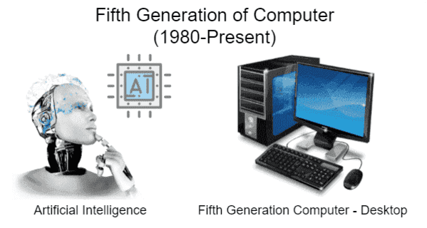

FIFTH GENERATION COMPUTERS...!!
- The period of fifth generation is 1980-till date.
- In the fifth generation, VLSI technology became ULSI (Ultra Large Scale Integration) technology, resulting in the production of microprocessor chips having ten million electronic components.
This generation is based on parallel processing hardware and AI (Artificial Intelligence) software.
- AI is an emerging branch in computer science, which interprets the means and method of making computers think like human beings.
- All the high-level languages like C and C++, Java, .Net etc., are used in this generation.
-
Eg. Desktop, Laptop, Notebook, Chromebook, etc.

.jpg)
Advantages :
- These computers are more reliable and faster up till date.
- These computers are available in different size and with different features.
- Also, these computers have capability of parallel computing.
- They are easily portable and have extra high processing speed.
Disadvantages :
- There is a fear of unemployment for upcoming human generations.
- There is a increase in electricity wages due to frequent use.
- The main disadvantage is that it is taking over the world.
Want more info click :